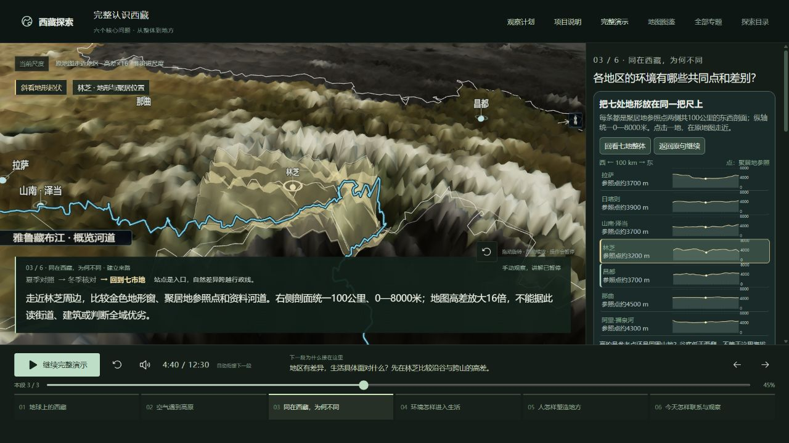

01 · 当前阶段
整体认识版
回答位置、环境、地区差异、生活、历史文化与现代联系六个问题。用户能说出条件、变化和原因。
2026-10-18 · 阶段范围已固定 · 录音基线 V1-main-20261018.2
当前交付是六章“整体认识版”。本轮只补第三章地区辨识，并明确收口条件；其余章节冻结。下一阶段规划线路体验，本轮不开发线路、不扩展景点和模型。
当前状态：可演示的整体认识第一版，主线功能基本齐全；真实地方外观、沿途变化与生活细节仍不足。停止扩充本阶段功能，不代表完整产品或用户理解已全部验收通过。
01 · 当前阶段
回答位置、环境、地区差异、生活、历史文化与现代联系六个问题。用户能说出条件、变化和原因。
02 · 仅规划
沿一条真实走廊连续进入地方，看到沿途环境与生活如何变化；随时回到线路和原讲述。
03 · 暂不启动
在交通、开放及访问条件按日期核实后，形成可调整的旅行安排。现有观察计划不是可订行程。
当前版本帮助用户建立认识西藏的框架；七地高程与气候比较只解决基础辨识。用户能听懂介绍，却未必对真实地方留下深刻印象，这个体验缺口只解决了一部分。实现完成、操作检查通过、用户真正看懂，是不同的结论。
下一版本可以以经典线路为入口，系统认识真实地方更细节的特点和价值。沿路进入地点，看见山谷、河流、植被、城市与日常生活，解释它们为什么这样；再结合真实事件和地方使用，认识自然、文化与当代价值。画面、讲解与用户操作共同完成介绍。
地点依次回答：在哪里、与前后路段怎样相连 → 真实长什么样 → 有哪些特点、为什么形成 → 人怎样生活、历史怎样改变地方 → 有什么价值与约束 → 观察什么、注意事项怎样核实 → 回到线路继续。真实影像和资料支持具体特点，示意演示用于解释原理。
第一版继续冻结，下一版先贯通一段、再接齐一条线路。以用户能看见差异、解释原因、进入地方并返回原线为交付标准。完整交接摘要见产品方向记录。
六章、21段、750.024秒保持不变。不追加录音，不以增加城市、景点或模型数量作为完成标准。主入口继续直接进入效果演示，本页由“项目说明”按钮进入。
| 章节 | 必须建立的认识 | 现有基础与本轮取舍 | 用户可观察的通过标准 |
|---|---|---|---|
| 1 地球上的西藏 | 位置、尺度、行政区与自然地理范围 | 保留地球到高原的定位；冻结。 | 能指出中国西南与亚洲背景，区分西藏自治区和青藏高原；暂停恢复位置正确。 |
| 2 空气遇到高原 | 水平来流、地形抬升、凝结降水的因果链 | 保留自转与水汽对照；冻结。云雨不继续追求影视化。 | 改变一个条件后，能指出画面变化并解释原因；能区分实测资料与原理示意。 |
| 3 同在西藏，为何不同 | 整体较高不等于各地一样；谷底与周围山体、不同地区之间都可比较 | 本轮唯一补齐项：七处聚居地同尺度100公里剖面，原地图走近与回看。原有夏冬气候站对照保留。 | 关闭声音仍能比较参考点高低与周围起伏；选择任意两地不改变剖面尺度；能说出点位不代表全域。 |
| 4 环境怎样进入生活 | 自然条件经过设施、劳动与组织，才成为可使用的服务 | 保留现有用水、通行案例；冻结。 | 指出自然条件和人的行动分别改变什么；操作后回到原句，不丢失场景。 |
| 5 人怎样塑造地方 | 具体营建、交流和使用解释文化形成与延续 | 保留有来源的托林交流、大昭寺保护等；冻结。 | 至少能用一个事件说出行动—空间/使用变化—原因；不把示意当复原。 |
| 6 今天怎样联系与观察 | 抵达、接续、共同维护和带着问题观察 | 保留铁路、汇水、管护和观察计划返回；冻结。 | 看见线路与河谷/站区关系；编辑保存一个观察任务，返回原讲述；不把教学观察顺序当实时旅行安排。 |
| 级别 | 问题与处理 | 结束条件 |
|---|---|---|
| 本版必须修 | 地区之间只有点名、缺少共同尺度。本轮补地形剖面和同一地图走近；所有数值来自已有DEM和已归档聚居地坐标。 | 七地可比较、可操作；自动讲述突出对应组；手动不推进语音；回看整体和返回原句正常。只对明确缺陷再改一次。 |
| 本版验收限制 | 已有助手视觉/操作检查与旧版功能记录；新版完整听感没有音频回录，正式首次观看者验收仍0/3。 | 分别记录，不宣称全验收。正式理解验收按现有协议完成一次有记录的会话：六章各回答核心问题，并完成一次比较、一次计划往返。错误若影响核心认识才重开对应项。 |
| 后续再做 | 线路实地感、沿途高精度影像、交通接续、逐站风景人文与访问条件；统一放到第二阶段。 | 只按下方范围启动，不把它们倒灌成本阶段的新缺陷。 |
| 无需继续处理 | 更多人物模型、更多孤立景点、重复全程播放、没有明确理解问题的镜头或粒子润色。 | 冻结。只有可复现的资料错误、音画指向错误、操作阻断或理解证据才能重开。 |
收口门槛：内容与资料可追溯；关键过程有对应画面；七地差异不依赖纯语音；比较/暂停/恢复/计划返回无阻断；录音基线不变；遗留限制公开。达到后停止本版实现工作，称“整体认识版功能收口”；“理解验收通过”须另有首次观看者证据。
总体优势不作排名。通行、用水、农业、服务或文化价值各有不同条件和证据；粗高程剖面不能推出发展优劣、建设适宜性或全域气候。
2026-10-19：G318林芝—鲁朗首段已接入，开始线路体验，或查看交付范围与核查记录。下列整线走廊仍为后续规划。
实现前先看下一版接入分析与首段资料初核：保留六章，新增并列线路板块，不增加第7、8、9章。本页四地区认识走廊仍是候选；单段优先级以新核查为准。
范围规划 · 尚未实现 · 不是旅游推荐或已核验行程
先以已有交通与内容基础的走廊作为候选，具体经典走法、交通方式和节点在资料核验后确定。
选择这条认识顺序，是为了复用现有地形、地方材料及交通案例，把环境、生活和历史放在连续空间中解释。拉林铁路经山南联系拉萨与林芝；拉日铁路联系拉萨与日喀则。依据为2021年拉林铁路开通资料与国家铁路局2014年拉日铁路开通资料。报道年份不代表当前班次、时长或运营状态。
为什么走到这里 → 看见地形与河流怎样变化 → 进入地方，辨认城市与生活 → 用一个有据事件解释人文形成 → 选择观察问题 → 说明接下来的空间联系 → 回到线路。
| 包含 | 复用与必要补齐 | 明确不做 |
|---|---|---|
| 一条走廊、四个地区节点、三段衔接 | 复用已有地图、地方来源和观察计划；先核验连续轨道/公路几何、站区与城区的真实接续，再实现连续行进。 | 不同时建设多条环线；那曲、昌都、阿里只保留整体定位，后续支线另立范围。 |
| 每节点的真实特点与价值 | 以一个环境问题、一个生活关系和一个已有历史案例组织细节；真实影像与地形解释风景和地方空间，真实材料解释人文形成、持续使用、价值与约束。 | 不追加景点清单、孤立人物模型；不以漂亮画面代替来源。 |
| 选段、进地方、操作比较、回线路、保存观察 | 进入前保留线路进度；返回恢复同一段和原句。用户可自由停留，不强制延长第一阶段录音。 | 不做预订、酒店推荐、票价承诺或无依据的逐日行程。 |
| 与路段/地方对应的注意事项 | 后续按出行日期核实交通、季节、开放预约、进入规则与健康信息，显示来源和更新时间；未知即标待核验。 | 本轮不给未核实的许可、天气、健康或通行结论，不把历史开通报道当实时保障。 |
地区对照实现轮次的47项针对性检查、类型检查及构建通过；本次方向整理只更新说明。浏览器实际逐个选择七地、回到整体、恢复原45%讲述位置。无新增录音或地方模型。程序通过不代表首次理解通过。

本轮范围及检查记录 · 冻结录音基线 · 首次观看者验收协议
托林、汇水、管护的既有实现与复查 · 原始思路与阶段取舍 · 历史版本功能验收 · 此前画面引导检查
数据口径：七处均为公开聚居地参照；100公里东西剖面来自已有约5—6公里DEM，三角网插值与地图一致。同一0—8000米纵轴，参考点读数取约百米显示。不是官方城市海拔、行政区平均、实测山峰或出行路线。